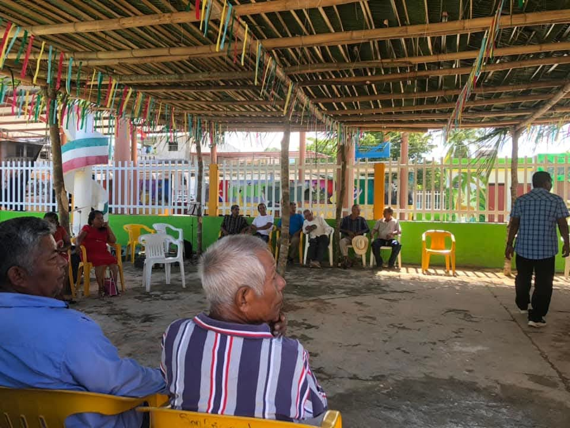
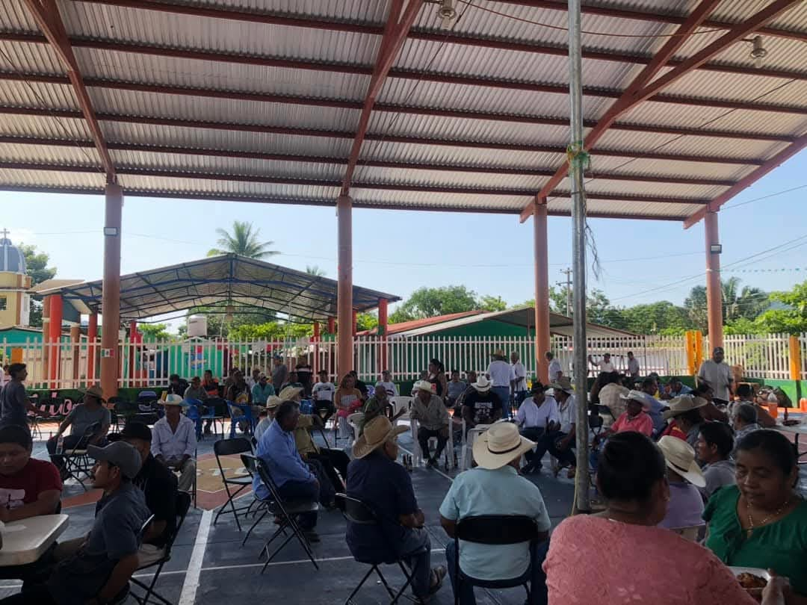
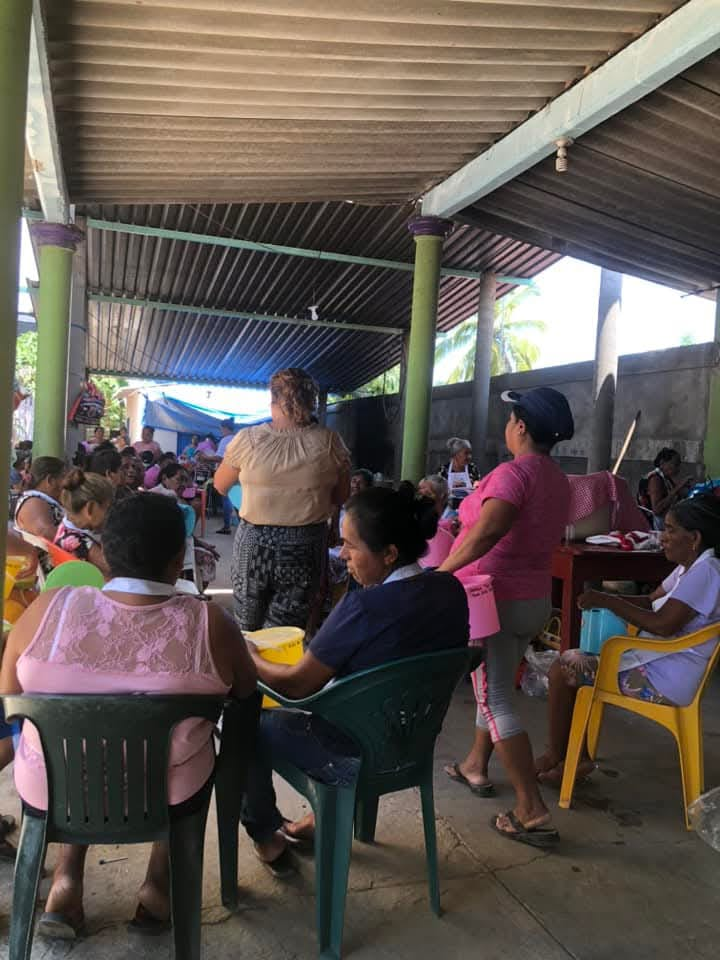
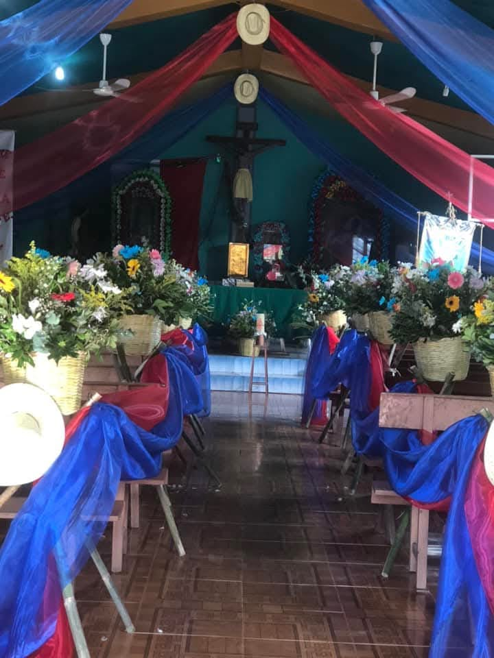
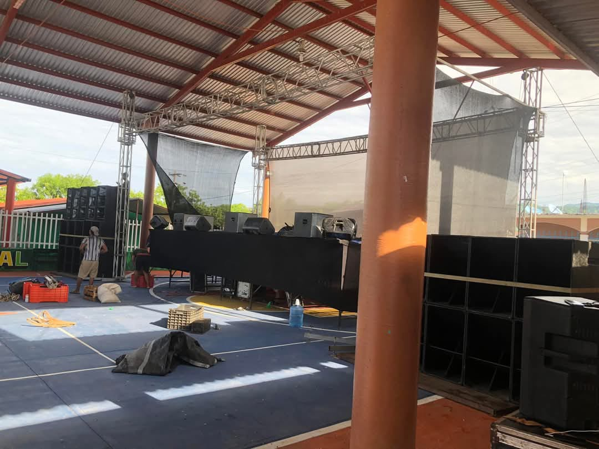

Fiesta patronal: Se celebra en honor a San Cristóbal, con misas, música y eventos tradicionales. Danzas y música: Se preservan bailes típicos y música regional mixteca. Gastronomía: Platillos típicos de la región como caldo de res, frijol.